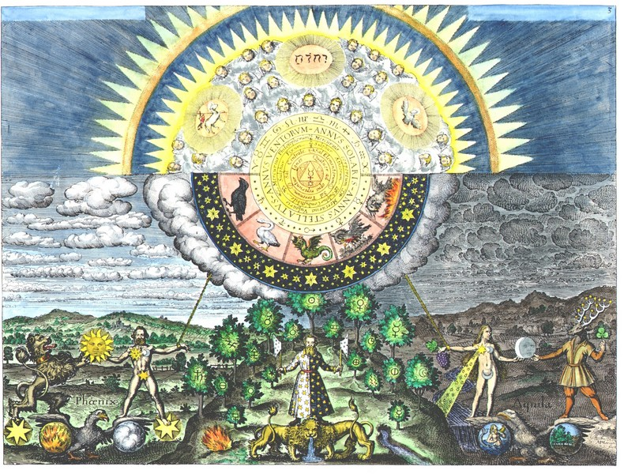
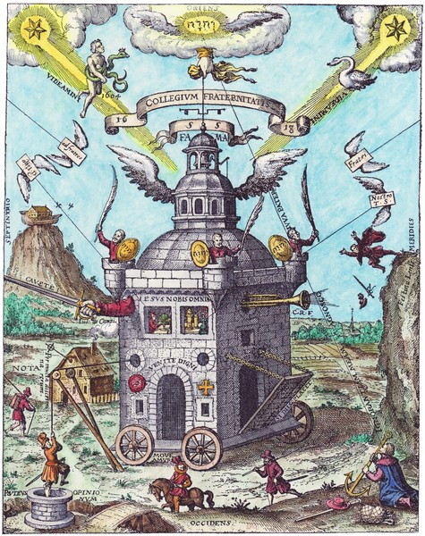
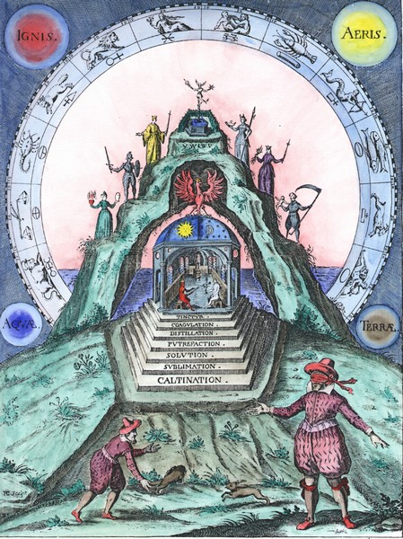
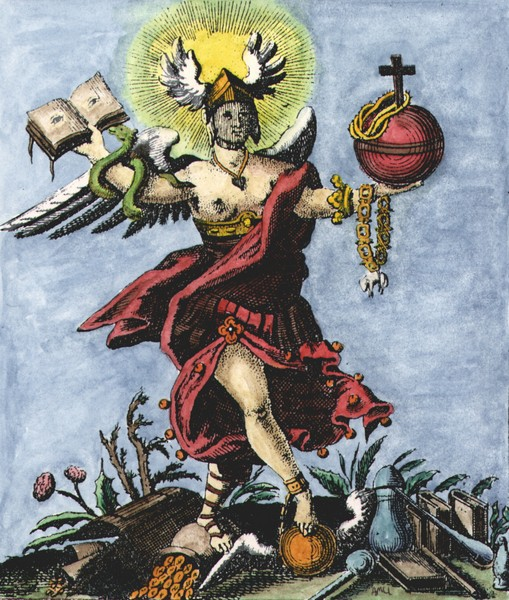
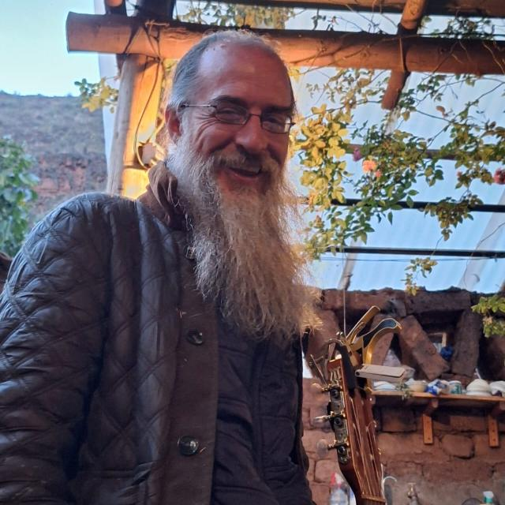

Free Email Course
Safely Navigating Your Shamanic Calling
Begin with a guided introduction delivered directly to your inbox.
Get the Free Course →The School of Modern Soul Science
Modern Western Shamanism, Alchemy, Esoteric Studies, Ceremonial Healing Work, Shadow Work, Initiatory Guidance, Spiritual Science, Mentorship
Explore the free teachings, courses, and conversations below—or go deeper through the School of Modern Soul Science and private work with Andrew.

Start Here
Substantial free material for exploring the work before deciding whether you want to go deeper.
Safely Navigating Your Shamanic Calling
Begin with a guided introduction delivered directly to your inbox.
Get the Free Course →The Alchemy of Modern Shamanic Initiation
A substantial four-part introduction to the ideas and practices at the heart of the work.
The School of Modern Soul Science
Explore lectures, conversations, teachings, and longer-form explorations on the Modern Soul Science channel.
Visit YouTube →
Go Deeper
The primary destination for those who want to study these teachings in a deeper, structured way.

Private Sessions
For those looking for more direct guidance and a more personal experience.
Book a private session for individualized initiatory guidance and mentoring.
Book a Session →Explore opportunities for customized and private entheogenic work with Andrew in the Sacred Valley of Peru.
Explore Possibilities →
About
I have been studying Archetypal Shamanism, Entheogenic Spirituality, Alchemy, Jungian Psychology, and Spiritual Science for the past 25 years.
I earned my B.A. from Yale University in 2002 studying Literature and Psychoanalysis, when I was introduced to the work of C.G. Jung, and the mysterious Art of Alchemy.
In 2009 I earned my M.A. from the Pacifica Graduate Institute studying Jungian Psychology and Mythology.
Since 2006 I have participated in and extensively journaled over 1200 Ayahuasca ceremonies in the Santo Daime tradition. In 2008 I received my first initiation in this lineage.
Since 2019 I have been running a Santo Daime center with my wife in the Sacred Valley of Peru.
Since 2021 I have been specializing in deep shadow work within the Santo Daime tradition, and have cultivated special private healing works that address the deepest and darkest issues.
So I am a ceremonialist, medium, and musician, but also a teacher of "Modern Shamanic Alchemy".
Throughout my studies, I realized that the art of spiritual Alchemy was Western civilization's own version of shamanic initiatory wisdom, and as such, it had something very unique and valuable to offer the modern seeker – provided its arcane symbolic language could be decoded. So from 1999 to the present I embarked on a sustained effort to decode the magical connection between Esoteric Alchemy and Entheogenic Shamanism, Jungian Psychology, and Rudolf Steiner's Spiritual Science... and nothing could have prepared me for what I discovered: A magic key to unlock treasure beyond compare!
I now offer the key to the same treasure in the form of this school, The School of Modern Soul Science, to the ones courageously seeking this particular sort of knowledge at this particular time.
